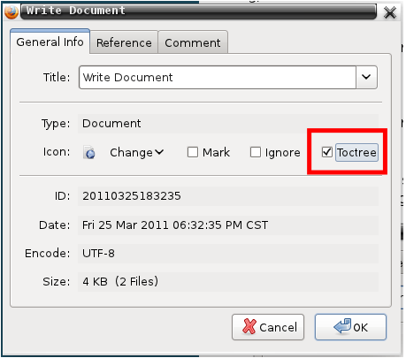
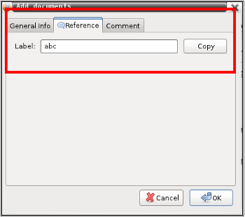
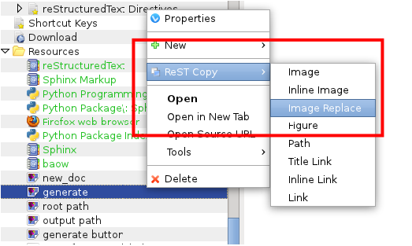

|
|
English 简体中文 |
You can write documents by adding objects, like Document, Summary, Image, File, Bookmark, Separator, Folder or Source File, and referenced with Sphinx Markup (ReST).
- Document:
you can edit with it, and add sub document.
- Summary:
It’s text paragraph, and will be inserted into document.
- Image:
You can add images by select from local file or saved from web pages, and referenced globally in ReST.
- File:
You can add files by select from local file or saved from web pages, and referenced globally in ReST.
- Bookmark:
Web links with title and URL, and referenced globally in ReST.
- Source File:
You can edit source code, like C++, Java, PHP, Python.
- Separator:
It’s used for partition.
- Folder:
Help you organizing resources.
Click menu New Document from the sidebar, and input title in bring up dialog, then input text in new opened tab editor, and click Save button finally.
You can add sub documents as sections by click pop up menu, or drag it to your target place.
Tip
A document can be contained by another document, this is document tree. Section mark characters is no longer needed.
You can select toctree style with sub documents in Properties dialog window by checking Toctree.

To support cross-referencing to arbitrary locations in any document, you can set a reference label.
Open Properties window by right click pop up menu, select Reference tab :

Input your label text, and click Copy, and click OK button.
Paste text into your document where you want to refer to this label.
Summary text will be inserted into document, and displayed in sequence.
Click menu New Summary from the sidebar, and input title dialog, then input text in new opened tab editor, and click Save button.
You can add images and files from local directory or web pages.
Add local file:
Click menu New Image or New File from the sidebar, and select your local file or input a file URL.
Save web file:
move your mouse on image, link, web pages, and right click , you see this menu:
After done, you can reference it by copy ReST text from pop up menu or property dialog.
After you have added a image. You can copy its ReST text, and paste into your document where you want to display image.

Select “Image Replace” from pop up menu.
You can add links or bookmark with right pop up menu, or click menu New Bookmark from the sidebar.
You may copy ReST text to your document for web links.
You can add source files from local directory, and edit code.
Click menu New Source File , and select your local file, like C++, Java, Python, PHP files.